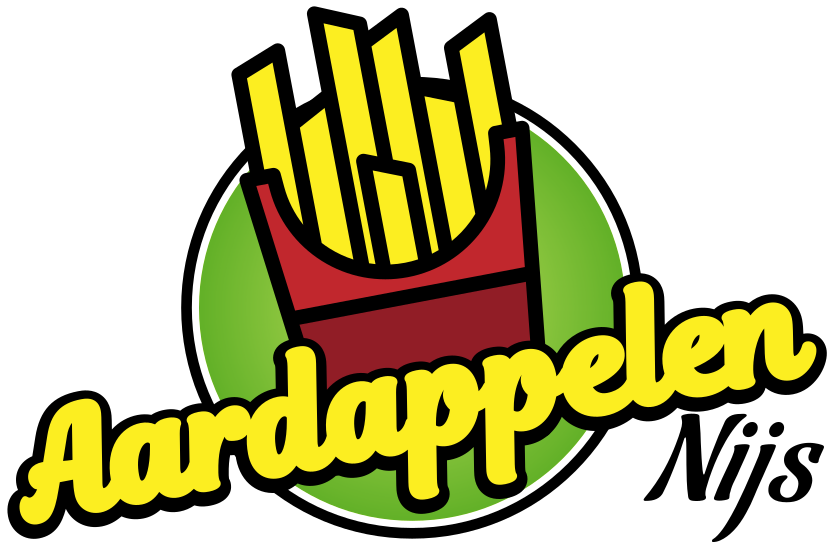

Met dit programma plan je in een paar klikken de goedkoopste leverroutes voor de bestelwagens. Je geeft in welke frituren vandaag zakken moeten krijgen, en het programma rekent zelf uit welke wagen waar langs rijdt, in welke volgorde, en wat dat kost. Daarna stuur je de route met één klik naar Google Maps of naar de chauffeur.
Ga in je browser (Chrome of Edge) naar aardappelennijsdigital.web.app. Geen installatie, geen login. Internet moet wel aanstaan (voor de kaart, het adres-zoeken en de routes).
Bovenaan links staat het depot al juist ingesteld: Aardappelen Nijs, Ebdries 50A, Rillaar. Daar hoef je normaal niets aan te doen. Vertrek je uitzonderlijk ergens anders? Typ dan een ander adres in dat vakje en klik de juiste suggestie aan.
In het blok Vloot staan de instellingen van de bestelwagens:
Per frituur die vandaag een levering krijgt:
De frituur verschijnt in de lijst mét het totaalgewicht (bv. “190 kg · 15×10 · 8×5”) en als bolletje op de kaart. Verkeerd ingegeven? Klik op het kruisje naast de stop en voeg opnieuw toe.
Klik op de grote oranje knop ▸ Bereken goedkoopste routes. Het programma verdeelt de frituren over de wagens en zet elke route in een eigen kleur op de kaart — over de echte wegen, niet in vogelvlucht.
Bovenaan zie je meteen het totaal: kilometers, kost, aantal wagens, CO₂ en hoeveel je bespaart tegenover elke frituur apart bedienen.
Onder de kaart staat per route: welke wagen, de volgorde van de stops, de kilometers, de rijtijd, de kost en de lading in kg.
Bij elke route staan knoppen:
Bovenaan het routeplan staat ook ⌗ Kopieer plan + links: die kopieert het hele plan als tekst, met per route de stops, de zakken per frituur én een kant-en-klare kaartlink. Plak dat gewoon in WhatsApp naar de chauffeurs — klaar.
| Wat | Limiet / weetje |
|---|---|
| Aantal stops | Maximaal 30 per planning |
| GPX-export | Maximaal 1 per dag (morgen kan het weer) |
| Adres-zoeken | Even geduld tussen zoekopdrachten — het systeem remt vanzelf af als je te snel gaat |
| Kilometers | Echte weg-kilometers en rijtijden. Lukt dat even niet (dienst onbereikbaar), dan schat het programma en zie je daar een waarschuwing bij. |
| Opslaan | Je invoer (depot, frituren, vloot) wordt automatisch bewaard in de browser en staat er bij het openen gewoon weer — wel per toestel: wat je op de laptop ingeeft, staat niet op je gsm. |